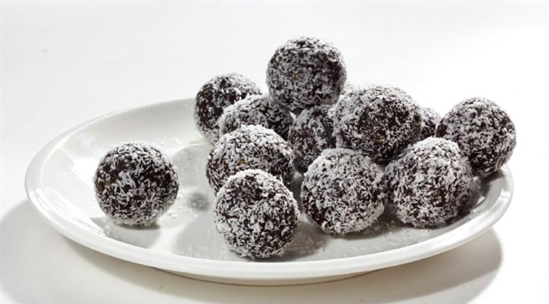

כדורי שוקולד
כדורי שוקולד קטנים וטעימים שמכינים בצ'יק צ'ק למשפחה ולחברים. עם התוספות השונות שניתן לגלגל אותם אתם יכולים להרשים את כולם!
מצרכים ל-30 כדורים:
200 גרם ביסקוויטים פתי בר, 10 כפות סוכר , 5 כפות קקאו
7 כפות חלב, 100 גרם חמאה או מרגרינה
אופן ההכנה:
- פורר את הביסקוויטים ולהכניס אותם,את הסוכר ואת הקקאו ולערבב.
- להוסיף את החמאה, והחלב ולערבב היטב עד שכל החומרים התאחדו ואין גושים.
- ליצור כדורים קטנים ולגלגל בתוספות השונות: סוכריות / קוקוס ועוד.
- לסדר בתוך מנג'טים ולהכניס למקרר עד שהכדורים יתקשו.
בתיאבון!
